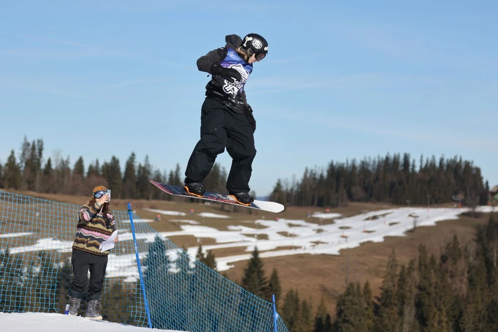
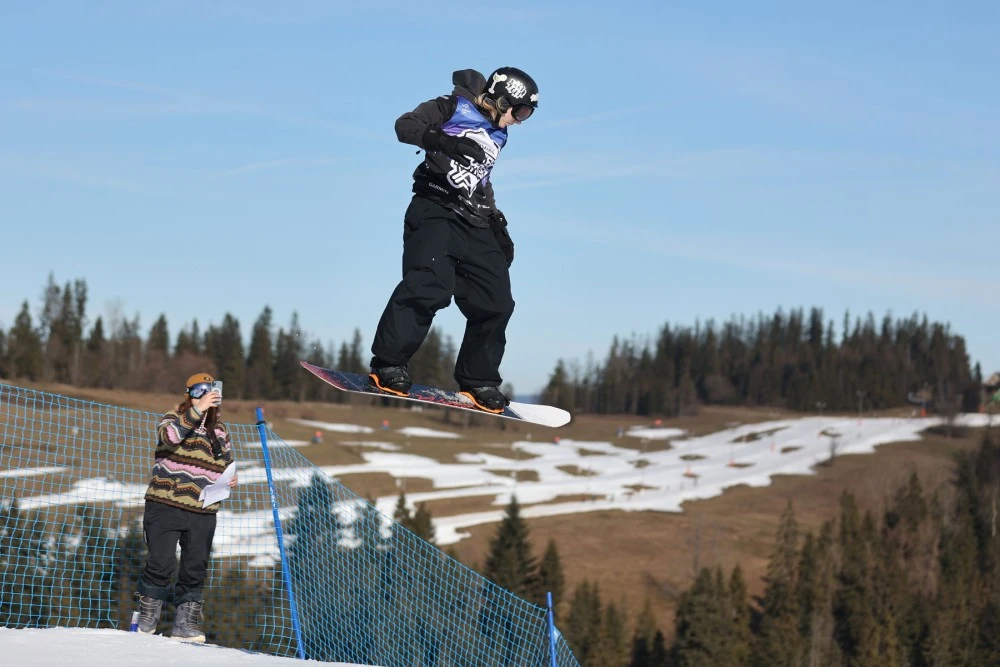

[001]
Paradoksalnie wszystko zaczęło się od nart. Kiedy miałam 3 lata pierwszy raz na nich stanęłam a potem już co zimę na nich jeździłam. Gdy miałam 9 lat pierwszy raz spróbowałam snowboardu i 5 dnia skręciłam nadgarstek. Zrobiłam wtedy 2 letnią przerwę od tego sportu, jednak cały czas ciągnęło mnie do tego i tak w 2020 roku dołączyłam do klubu Alpino. Nauczyłam się wtedy jeździć i rozpoczęłam przygodę z freestylem. I tak przez 4 lata z roczną przerwą powoli uczyłam się różnych tricków. Niestety nie miałam za dużo możliwości treningu na snowparku ale próbowałam wyciągać jak najwięcej z standardowych tras narciarskich. Gdy w Listopadzie 2023 pojechałam na obóz na Lodowiec Stubai w Austrii poznałam Tomasza Zbiciaka, zapytałam się wtedy czy jest szansa abym wystartowałą w tym sezonie na zawodach. Zbiciu zgodził się.